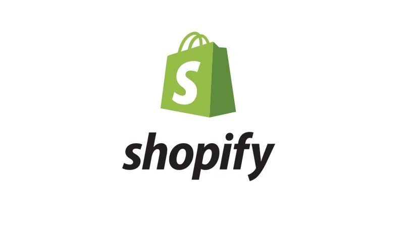

Intro
Hello and welcome to my portfolio! I'm Jacob and I'm currently a 5th
year computer science co-op student at the University of Guelph. I'm
passionate about software engineering and love learning new
technologies!
Lately I've been diving deep into containerization with Docker, and
serverless architecture with Google's Cloud Run.
Reach me at my email address jmichels@uoguelph.ca
Connect with me on Linkedin
See what I've been up to on my Github
Check out what I did at my most recent co-op with Shopify.
Manulife Fall 2020

Introduction
Hello! I’m Jacob and I’d like to welcome you to my report on my time
as a student backend software engineer at Manulife Financial
Corporation. I had a great time at Manulife and would like to share
some of the things I learned!
Information about the employer
During the fall 2020 season, I was working for Manulife Financial on
a co-op term. I was working remotely from my home, but had it not
been for the pandemic currently going on I would have been working
out of their beautiful Waterloo office. Manulife is a Canadian
company and primarily operates as multinational insurance company,
but they also provide other financial services such as banking.
Founded as the Manufacturers insurance company in 1887, its first
president was the first prime minister of Canada, John A Macdonald!
More recently, Manulife has been going through a technological
revolution. Moving away from mainframe based systems in favour of
cloud based systems with Microsoft Azure to benefit from cost
savings, scalability, and many others.
Job Description
For the duration of my co-op at Manulife, I was working with the
Sparck squad. Sparck’s main objective at the time was assisting with
the move to cloud-based systems to replace Manulife’s old
mainframe-based systems. My squad’s specific focus was on creating
and maintaining backend microservices with .Net core. The main
project I was given to work on was a .Net framework microservice
that’s future job would be to handle insurance claims submitted by
dentists on behalf of patients. It was in an unfinished state and in
need of some repairs, so I undertook some work to overhaul it. Some
examples of the work I managed to do on it are that I migrated the
codebase from the windows only .net framework to the latest version
of the cross platform .net core, I fixed the code quality issues
reported by the static code analyzer SonarQube, and I refactored the
codebase to properly take advantage of modern .Net core features
like constructor-based dependency injection and asynchronous
programming.
When not working on the dental claims project, I would be helping
the team with whatever they needed. For example, I often found
myself managing Jenkins pipelines and helping to debug them if they
happened to fail. Another task I often picked up was writing unit
tests or resolving code quality issues on projects being worked on
by other team members. While most of the work I did during my work
term was writing code, I also picked up a few tasks to write
documentation. I would be tasked to write documents detailing the
current status of an application or getting started documents to
help onboard others to start working on an application. I appreciate
that I had the opportunity to try different things at work every
day, so I was able to find out what I most liked doing.
Goals
I believe that goals are a necessary tool to track and measure your
improvements at anything, so to develop my career skills I set three
goals for myself to work at during my co-op at Manulife.
The first goal I set for myself was to improve my oral communication
abilities. I understand that good communication skills in a work
environment are essential, so I set this goal for myself in order to
ensure that I can speak clearly, concisely and confidently. Since
most of my speaking was about what work I had been doing and what
work I plan on doing, I found that staying organized and keeping
notes tracking what I’ve done and what my plans are helped me
greatly in making progress towards this goal.
My next goal had to do with becoming more familiar with the
technology used by my squad. Sparck’s language of choice was C# on
the .Net core platform, and I realized that to be truly helpful to
my team I needed to have a thorough understanding of C# and it’s
best practices to be able to write code independently without my
team questioning its quality. Reflecting on this goal, I believe
that what helped me achieve it was taking my time to fully examine
code and not being afraid to ask questions about why the code was
written the way it was.
My final goal was wanting to learn more about the process of writing
software to be used in an enterprise production environment. This
means things like learning how to write code to be secure,
performant, fault tolerant, and testable, things that can often take
a backseat in school or personal projects. I also wanted to learn
about the infrastructure used to support production code, like CI
and CD systems, monitoring systems like new relic, and disaster
recovery methods. To accomplish this last goal, I found that I
needed to be exposed to the development and maintenance of Sparck’s
microservices, and to pay attention to how they worked. I was able
to see how new enterprise level applications are built with a focus
on performance, such as considering and optimizing what lies on a
service’s hot path. Being exposed to this kind of development taught
me that stability is often more important than using the latest and
greatest features. For example, choosing to use an older, LTS
release of something than using the brand-new release may be a
smarter choice for software that needs to have 100% uptime and
support many users.
Technologies
Working at Manulife gave me the opportunity to use some great tools
to assist development and remove some of the unproductive tedious
work. Two notable examples were CI/CD pipeline systems and utilizing
an IDE to write code efficiently.
The CI/CD system used at Manulife is called Jenkins, and it’s a very
useful tool! What a CI/CD system allows you to do is automate the
continuous integration (validating and checking in small changes to
SCM) and deployment of your code. I learned the process of setting
up a new Jenkins CI pipeline to build, test, and quality check your
code with SonarQube, as well as create CD pipelines to deploy code
to a predefined environment, if it passed the CI checks. I learned
that while these pipelines may take a little while to initially
learn and setup, the payoff is worth the time investment as they
save a significant amount of time over the long run and inevitably
reduce the number of mistakes made by user error.
As for the IDE, Sparck used Microsoft Visual Studio. After the
initial learning curve that came from my transition from Visual
Studio Code which I had relied on up until this point, I quickly
realized Visual Studio is an awesome tool that makes the development
experience much simpler by including multiple useful tools. Some of
the many different tools it bundles together are a nice GUI for
source control, integrated build tools that call the compiler and
provide hooks to run batch files before and after builds, automated
code cleanup and format tools, and an automated test runner. It also
has extensive plugin support, so if there I was some functionality I
needed I could download a plugin or make my own to add that
functionality in. With the tools it provides, and some fancy editor
features like intellisense and code generation, Visual Studio helped
me become as productive a developer as I could be.
Conclusion
My backend software engineer co-op at Manulife was a fun and
productive time. I was happy to be a member the Sparck squad and
enjoyed the challenging work I was doing. I was able to develop my
programming skills as well as my communication skills and learned a
collection of helpful technologies to further propel my computer
science career.
Manulife Summer 2021
Introduction
Hello there! Welcome to my report on my second stint at Manulife.
This time around, I was doing data engineering with Databricks and
Python. I'd like to share with you my overall experience at Manulife
this summer and what I took away from this work term.
Information about the employer
Manulife is a large Canadian-based, multinational insurance and
financial services company. They've been around quite a while, since
1887 to be precise. Clearly, they've had a lot of time to accrue a
massive pile of data. For decades, Manulife has been storing most of
it's abundance of data in it's on-premises mainframe system. While
they do still work, these mainframe systems are very much out of
date and often very painful to work with. Manulife has been working
on moving away from these mainframe systems to much more modern
cloud-based systems which are easier to work with and scale better.
This is where my role comes in, I was helping with the extraction,
transformation and loading (ETL) of mainframe data to the cloud.
Job Description
As I mentioned above, I was doing data engineering during this
work-term. More specifically, I was working with the Hopper squad to
help to build the process that would eventually be responsible for
automatically moving all data from the mainframe to the cloud.
Assisting with the creation of this automation process was, of
course, not as simple as it sounds. While reading data from the
mainframe was thankfully abstracted away, and writing data to the
output cloud database tables was very simple, the middle step of
applying transformations to the mainframe data to satisfy business
requirements proved to be a tricky task. To do this transformation
work, the squad introduced me to Apache Spark, a data processing
framework. This framework was very useful in that it could apply
complex logic to a dataset in a way that was easy to understand.
Most of my time during this work-term was spent debugging,
improving, and creating new transformation jobs using Apache Spark
on the Databricks platform, a cloud runtime for Spark.
I also spent a lot of time writing unit tests for these
transformations. It was critical to ensure these transformations did
what we expected them to do, for every possible case, so writing
exhaustive tests was a very important part of the job, even if it
wasn't the most exciting.
While not a part of my official job as a data engineer, I also did
some work to improve the squad's development environment. One such
improvement I undertook was creating and documenting a new testing
environment in an attempt to increase the runtime performance of the
tests. Running the Spark unit tests on Windows machines was horribly
slow due to Spark not being optimized for Windows. Some tests could
take upwards of an hour to run, while only taking minutes on
Unix-like machines. Unsatisfied with this, I leveraged the Windows
Subsystem for Linux (WSL) to create a Linux environment to run our
tests in. This resulted in a massive performance improvement for the
tests, in some cases they ran up to 60 times faster. I also
undertook smaller improvements, like fixing database connections for
a specific Spark cluster type. While programming the transformations
was my main duty, I'm happy to use my technical intuition help iron
out the small annoyances.
Goals
I set three goals for myself to work towards during my term at
Manulife this past summer.
The first of the three goals was to learn about and experience the
field of data science/data engineering. I had never done any data
engineering work previously, so I wanted to know more about it, like
what problems it solves and what tools are commonly used. After
working in the field for the summer, I gained some understanding of
data engineering and the problems it solves, but also realized I am
nowhere near grasping the whole field. It is a very broad
discipline. What I did gain was an understanding of how data
engineering solves the problems presented by Manulife, and why the
tools we used to solve the problems were used. For example, building
ETL pipelines to relocate and transform data is a data engineering
task, and we use Apache Spark along with Databricks and Python to
build the pipelines because of their flexibility and ease of
manipulating large sets of data.
My second goal was to improve my demonstration and presentation
skills. When creating this goal, I felt like I was not able to
demonstrate functionality as clear as I should be able to. Over the
course of the Summer, I was given multiple opportunities to gives
demos on things I had worked on/created. Through these
opportunities, I became more confident and became better at
structuring how I present information. I found a big help in this
was planning the structure of my presentations, rather than planning
what I would say. Sticking to a script is difficult, it's much
easier to have an idea of what I need to talk about and simply talk
about. After all, when presenting my own work, I'm the expert.
Another big help in working towards this goal was feedback from
teammates. I was able to guage how well I explained myself based on
feedback from squad members, and paying attention to common question
topics from the audience.
My final goal was simply to see if I enjoy data engineering work. I
am trying to experience something new each co-op term, so I can find
the kind of work I like and the kind of work I don't. Doing data
engineering was interesting, and I liked it more than I thought I
would. Python is a great language to use, and databricks is a cool
platform. Apache Spark is a very powerful tool and I'm happy I got
the chance to use it in a real project. With that being said, I
think I prefer backend web development. I feel at home writing
backend code, but I'm glad I had this experience so I know what data
engineering is like. If I get bored of backend development in the
future, I wouldn't be opposed to coming back to this kind of work.
Conclusion
My summer of data engineering Manulife was a great experience.
Hopper squad was an awesome squad to be a member of. I learned a lot
about a very different field of computer science, and got to gain
experience with a bunch of cool technologies that I hope to use
again one day. While data engineering may not be my first field of
choice, I will not forget what I learned this summer and hope I will
be able to apply this knowledge in my future career!
Shopify January-August 2022

Introduction
Hello and welcome to my work term report on my time at Shopify.
Accepting my offer to do a co-op at Shopify was like a dream come
true for me. Back when it was application season for my first ever
co-op work term, I remember viewing Shopify as a halo company. A
place I applied to every chance I could no matter how slim the odds
of an offer seemed. I wanted it so bad, and I thought maybe with
some luck eventually I could get it. I'm proud to report that
eventually I did get it!
I joined Shopify in January 2022 and was placed on the
infrastructure security team, the team responsible for securing the
Google Cloud Platform based resources Shopify runs on. Initially I
was anxious about joining this team; I had no experience dealing
with cloud native infrastructure, nevermind securing it. The team
primarily worked in Go, a language that I had previously only
experimented with. Thankfully, with the help of my great mentor and
ultra-supportive team, I was able to overcome these challenges and
have a fun and productive eight months with the team.
Information about the employer
Shopify is a large Canadian
e-commerce company headquarted in Ottawa, Ontario. Shopify's product
is an online e-commerce platform whose primary use is making it easy
for businesses of any size to setup an online storefront to sell
their products and services. Shopify operates at a truly immense
scale, powering
over one million businesses all over the world
and pulling in a staggering
US$4.611 billion in revenue for 2021.
Shopify's history starts in 2006, when now company CEO Tobias Lütke
wanted to open an online store called Snowdevil to sell snowboarding
equipment online. Tobias wasn't satisfied with existing e-commerce
solutions, so he decided to build his own. Leveraging the hot
framework at the time,
Ruby on Rails, Lütke built
the first iteration of Shopify. To this day Shopify's core still
runs entirely on Rails.
Shopify is now a remote-first company, Digital by design in
Shopify's own words. This means Shopify employees are allowed to
work wherever they want in their country of residence, with
restrictions only coming from legal requirements. This was not
always the case. Before the pandemic in 2020 a Shopify employee
would work out of one of many worldwide offices. During the pandemic
while everyone was remote, many Shopify employees began to fancy the
remote experience, so leadership decided to make remote work
permanent. Shopify sold some offices, and converted the rest into
"Ports", offices that can be booked out by teams for in-person
working.
Job Description
I joined Shopify as an infrastructure security intern on the
infrastructure security team. This team is a branch of production
engineering where, as I mentioned above, the goal is to keep
Shopify's
Google Cloud Platform (GCP)
resources as secure as possible, ensuring Shopify isn't an easy
target for internet hackers and opportunists. Shopify is a very
large Google
Kubernetes engine
customer, with hundreds if not thousands of clusters each containing
many individual compute nodes. It's a unique challenge to ensure
each cluster's nodes and supporting services are properly set up to
ensure security, while not negatively affecting the productivity of
developers at Shopify.
My time on the infrastructure security team was extremely
interesting and challenging. One of the most interesting/challenging
things to wrap my head around was working with
Kubernetes at such a massive
scale. Kubernetes is an open-source, Google-created system for
managing the deployment and lifecycle of containerized software. It
automates much of the container deployment and management process,
allowing organizations to operate at global scale without the pain
of traditional deployment strategies. Kubernetes is an incredibly
complicated software system; it took me months to understand basics
of how it functions and the advantages it provides. Now that I've
been exposed to Kubernetes for eight months, I am much more
comfortable around it and see the immense value such a system
brings. Kubernetes provides features for applying security rules to
all nodes in a cluster like role-based access control (RBAC),
admission controllers, and ingress objects that allow infrastructure
security's job to be realistically manageable rather than an
insurmountable amount of manual work. This exposure to Kubernetes
and it's plethora of powerful features allowed me to build
foundational knowledge of how infrastructure is kept secure in a
modern, global scale setting.
Another super interesting thing I found was the kind of security
problems the team was working on solving. Shopify is already an
incredibly secure platform. All of the glaring and simple security
problems I was aware of when I started had already been mitigated,
likely many years ago. For the most part, the problems the team was
working on were problems that I would never have even thought of, or
never would have thought needed to be addressed. I'm talking about
problems that are very specific, and assume already in-place and
battle-tested solutions fail for some reason. An arbitrary example
of one such problem could be "Let's say a malicious actor wants to
exfil the environment variables of a Kubernetes cluster node. They
somehow get write to access our container registry and push a
malicious image and attempt to deploy it to a cluster. The cluster's
admission controller will see that the image was from our container
registry, and allow the image to be run on a node in the cluster,
allowing for potentially sensitive environment variables to be
leaked." This problem assumes a lot of things have gone wrong. It
assumes there's a user that is somehow able to write to Shopify's
container registry, and is able to create Kubernetes objects, two
permissions which are tracked and not handed out like candy. It also
assumes that the target cluster is misconfigured to allow access to
node level environment variables from the containers running on it.
Above all else, it assumes the attacker knows exactly how Shopify's
Kubernetes implementation is structured and how to get around all
the security rules. While this isn't a real example, this is exactly
the kind of problems my team works on solving; assuming everything
goes wrong and existing protections are bypassed, where are we most
vulnerable? When presenting a problem like this, members of the team
would often use the term "Putting on my tinfoil hat for a second,
imagine a scenario where...". This expression shows just how out
there and unlikely these security problems can seem, but if someone
actually pulls one off, the results could be catestrophic. Let's say
someone actually gets into the situation where they are able to
perform the above example attack. A Kubernetes node may contain very
sensitive information like API keys, which can open the door for an
attacker to do very bad things like access resources such as
customer/merchant data or mine dogecoin on Shopify's clusters.
The team worked primarily in Go, a
language I didn't have any real prior experience with. To maximize
my impact on the team, I needed to get good with Go. I was able to
get comfortable with the syntax of Go within the first few weeks out
of onboarding, and started reading about common design patterns and
best practices not long after. After finishing the term, I can
confidently say I am able to write quality code and logically
structure an application in Go. The skills that helped me most were
being open to critism, and not being afraid to make mistakes. During
code reviews, being open to critism and asking questions about how
to improve my code allowed me to super-charge my learning of Go.
Also due to code reviews, I was able to make mistakes and have them
be caught by the team, allowing me to explore different
solutions/approaches to problems and further accelerating my growth
as a Go developer.
Goals
Since I was at Shopify for both W22 and S22 terms, I will focus on
my three goals from the more recent Summer term.
My first goal was to ship (finish and deploy) Hatchery v2 which was
a project I had been working on mostly independently. When I wrote
this goal just after the midpoint of my co-op, I had been working on
this project for about two months. Hatchery v2 was an overhaul of an
internal piece of software called Hatchery. Hatchery had some issues
that made it hard for the team to work with/maintain it, and hard
for new users to pick up and use. I really wanted to finish this
project before I left as it made major improvements to Hatchery for
both us and it's users. I also prioritized this project because it
was a great source of learning for me. I was able to explore new
technolgies working on this project, such as
Hashicorp Packer and
Buildkite and gain experience
with some powerful Go libraries like
urfave/cli and the
GCP Go SDK. The things I learned from this project and the
design->feedback->redesign process loop I went through made me a
much stronger Go developer and software engineer in general. From
completing this project I found that Go to be a very enjoyable
language to use, and that I would love to build my career around
being a Go developer. I was successful in completing this goal, I
shipped Hatchery v2 in July 2022 and have had multiple people use
the new system and give positive feedback.
My second goal was to give an infrasec talk (brief, informal
presentation to team) informing the team on my work on Hatchery v2
and what they need to know about the upcoming changes. I've always
felt weak in general at giving presentations, so I've been trying to
do it as much as possible to improve in this area. I thought this
would be a great opportunity to give a presentation as the audience
is people I'm comfortable with and it's a topic I'm very familiar
with. I knew this presentation needed to be strong, as I had limited
time remaining on the team. I had to ensure Hatchery v2's usage and
changes were made crystal clear to the team so they wouldn't have
any questions left unanswered after I left. I gave the Hatchery v2
presentation in late August, and I believe it went well. I was able
to explain how Hatchery v2 works differently than the original
implementation, and answer all questions the team had. I have had
members of the team successfully using Hatchery v2 without requiring
assistance which indicates I was able to convey the required
information.
My final goal for my Summer at Shopify was continuing to improve my
Go skills, specifically in testing tools/techniques. Testing was an
area that I was not comfortable in as I hadn't had the opportunity
to write many tests. To make progress towards this goal, I committed
to writing tests for Hatchery v2 and other projects I was
contributing to. While I did learn a few things about testing with
Go, I wouldn't say I was overly successful in achieving this goal. I
did write tests for Hatchery v2 and other projects, but I didn't
learn as much about testing as I would've liked. I stuck to pretty
basic testing and tools when I probably should've dove deeper into
the subject to learn more advanced and specific ways of testing Go
applications. For example, I didn't make use of Go's
httptest package
or look into any dedicated testing packages other than the widely
used
stretchr/testify.
Conclusion
Overall, I had a great time at Shopify. I'm very grateful for the
opportunity to try out another subset of software engineering, cloud
infrastructure security. Using Go to build software to secure
Kubernetes and other cloud resources has been a fresh and
constructive experience. I enjoyed the experience so much that I
decided to re-join the infrastructure security team after I
graduate. I'm looking forward to getting back and securing some
infrastructure! 🔒
Acknowledgments
Shoutout to the infrastructure security team! It was a pleasure to
be on the team! Everyone was super friendly and helpful. The team is
filled with insanely smart, driven, and generally fantastic
individuals. The passion and friendliness team made my co-op
experience one I will never forget. Super excited to be going back
after I'm graduated!
Contact
Reach me at my email address jmichels@uoguelph.ca